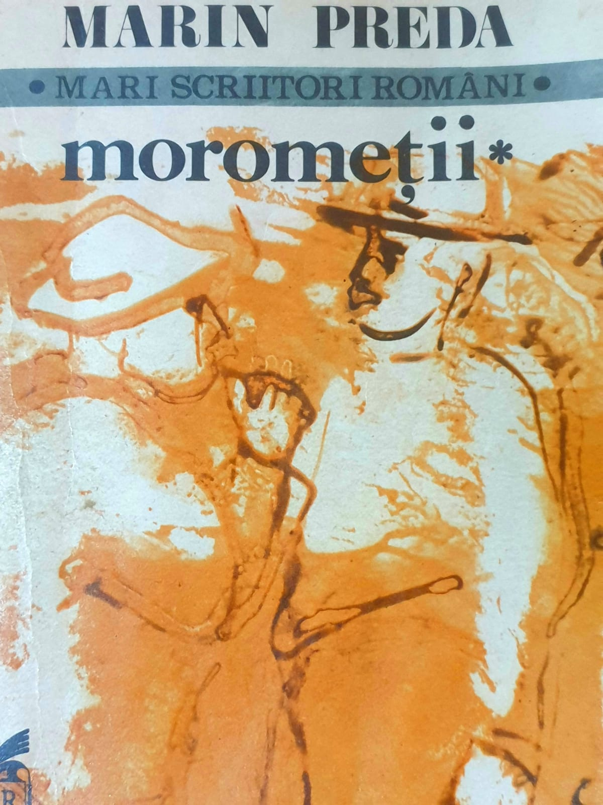

"Moromeții" - Marin Preda - Volumul întâi

Deși nu este un tip de carte pe care l-aș aborda de obicei, "Moromeții" a fost o lectura frumoasă din punct de vedere al ideii pe care autorul a vrut să o transmită. Recunosc, mi s-a părut oarecum monotonă din trei motive clare:
- sunt câteva personaje pe care eu le numesc "de umplutură";
- mentalitatea, limbajul si acțiunile sunt total diferite de cele din ziua de astăzi, ceea ce mi se pare normal pentru perioada
și locul în care se află personajele; - se povestește prea detaliat trecutul sătenilor; Atunci când am început să citesc această operă, nu am înțeles absolut deloc care este subiectul și scopul acțiunilor. Eventual,
totul a început să se clarifice după multe pagini citite. În schimb, am putut identifica tema cărții foarte rapid, întrucât
acest aspect reiese din toate acțiunile personajului principal. Aceasta se referă la familie, evidențiind viața celor opt - nouă
membri din casa Moromeților: Ilie, Catrina, Paraschiv, Nilă, Achim, Tita, Ilinca și Niculae. A noua persoană este sora lui Ilie,
Maria Moromete, poreclită Guica de către oameni din cauza comportamentului său neagreabil. Eu nu aș considera-o un membru
al familiei, deoarece aceasta nu locuiește cu cei opt, și mai mult, ea reprezintă personajul care alimentează ura copiilor față de tată.
Atunci când am început să citesc această operă, nu am înțeles absolut deloc care este subiectul și scopul acțiunilor. Eventual,
totul a început să se clarifice după multe pagini citite. În schimb, am putut identifica tema cărții foarte rapid, întrucât
acest aspect reiese din toate acțiunile personajului principal. Aceasta se referă la familie, evidențiind viața celor opt - nouă
membri din casa Moromeților: Ilie, Catrina, Paraschiv, Nilă, Achim, Tita, Ilinca și Niculae. A noua persoană este sora lui Ilie,
Maria Moromete, poreclită Guica de către oameni din cauza comportamentului său neagreabil. Eu nu aș considera-o un membru
al familiei, deoarece aceasta nu locuiește cu cei opt, și mai mult, ea reprezintă personajul care alimentează ura copiilor față de tată.
Subiectul cărții este simplu: Tatăl, Ilie Moromete, deși deține un puternic control asupra soției și a copiilor săi, el nu reușește să mențină echilibrul în familie.
Introducere: Familia Moromete, din lipsa banilor, este nevoită să-l trimită pe Achim, fiul lui Ilie, cu oile la București. Ceilalți doi fii mai mari nu sunt trimiși, motiv pentru care ei sunt sfătuiți de Guica să fugă de acasă. Guica are interesele ei și nu încetează să îi îndemne pe copii să plece. După câteva luni, Achim nu trimite niciun ban acasă și îi trezește bănuieli tatălui.
Vor fugi cei doi fii rămași la București? Va trimite bani Achim? Cum va proceda tatăl, confruntându-se cu situația în care lipsa banilor îi afectează datoriile?
În această operă, se vede foarte clar cum latura negativă a unor personaje începe să iasă la iveală, să provoace răul și cearta în familie care stă să izbucnească în orice clipă,
doar din cauza unei simple dorințe. Este scoasă în evidență atât iubirea pentru familie, cât și ura manifestată din anumite motive banale. Este clar că lipsa educației reprezintă piedica dintre relațiile strânse pe
care oamenii din sat le puteau avea între ei. Cât despre personajele "de umplutură", consider că, în acest volum nu am reușit să înțeleg prezența acestora. Am rămas cu ideea
că ele sunt acolo doar pentru a îmbogăți lista cu personaje și pentru a face cartea mai lungă, dar acest aspect rămâne de văzut în volumul II. Cam atât este de spus despre "Moromeții"
in secțiunea aceasta.
Personal, recomand această carte dacă dorești să descoperi cum decurgea viața la țară înainte de cel de-al doilea război mondial. Dacă ți-ar plăcea să întâlnești problemele unei familii din acea perioadă și modul în care aceasta luptă pentru a avea o pâine pe masă, atunci cartea te va satisface.